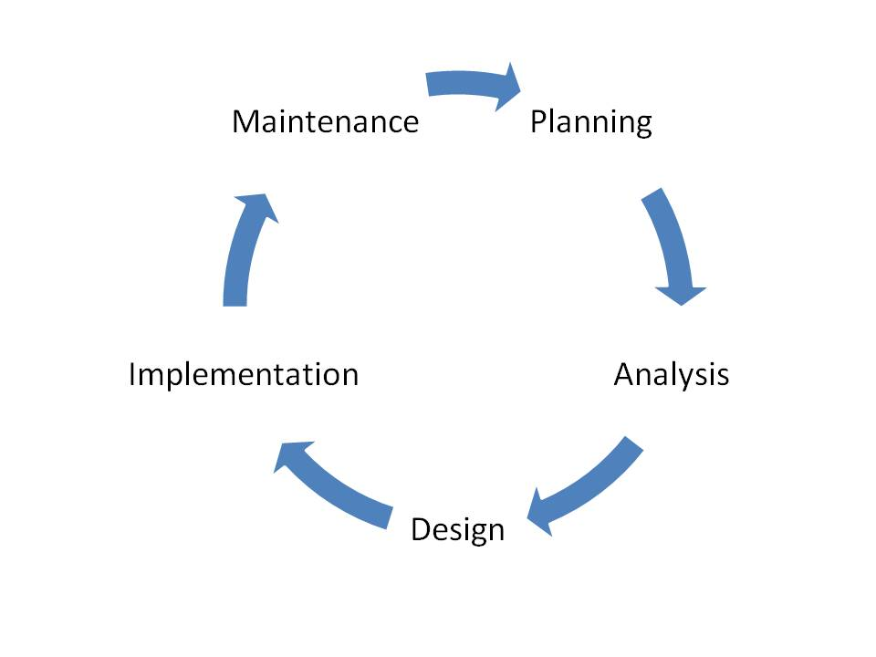

VersaSuite
Development lifecycle recommendations

*** use arrow keys to progress to the next slide ***
Planning, Analysis and Design
Project Management
Bugzilla is great for bug tracking, but subpar for project management
- A roadmap with a determined time frame for sprints, clearly lays out expectations
- large feature requests should be broken out and clearly defined
- Task time estimations help provide meaningful burn down of progress made during a sprint
- With any task sometimes complications can arise and estimations will need to be extended
- The current dailys provide no outward look on development time. %today & %total are just guesses
Recommendation
Implementation
- Information overload can be avoided by clearly defining a task in project management
- Development pratices should be standardized as much as possible
Recommendation
- Implement linting on all web developer machines to enforce coding standards
- Ensure any new components used are discussed and used consistently
- Developers should have a consistent UI library for charts,grids,inputs etc
- With these in place developers have far greater time becoming compentent in their role
Code Reuse
- With an application like VersaSuite and the very complicated buisness logic code reuse is of utmost importantance
- logic is being copied and pasted from different projects
- Over time the inconsistency will lead to code rott and extended development time
- Additionally when you need to change the look of a component or fix a bug you now you need to do this in
multiple places
Recommendation
- Incapsulate any components or libraries into either npm modules or nuget packages hosted on TFS
Source Control
- Currently all the code is hosted in one big repository
- Continous Integration, automated testing and automated building are by standard done on check-in
- When a check-in is made it could apply to any project
Recommendation
- Each project should be broken into its own repository
/